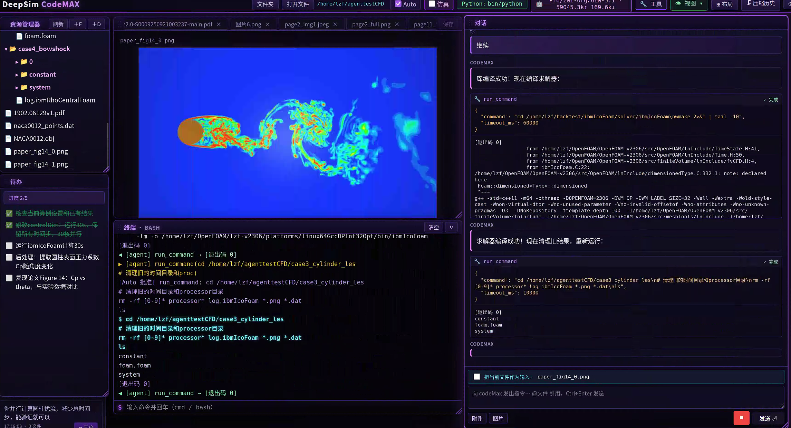

用大模型驱动 OpenFOAM / MFIX / LBM / DEM：建模、求解、监控、后处理。
重点是可审计的论文复现，和无人值守的长时间计算。

主界面：左侧文件，中部预览与终端，右侧对话与工具调用（早期版本截图）
以下都对应仓库里的代码，可以直接阅读和修改。
描述目标或上传论文，智能体读文献、生成几何与网格、写字典、启动求解、读日志、出图。每一步都是可见的工具调用，可随时打断或插话。
求解作业独立于网页和智能体进程运行；服务重启后自动重新接管仍在跑的作业。作业结束、发散或停滞时唤醒智能体继续。
模型接口出错时按退避重试，长任务超过重试次数后转为定时保活，接口恢复就从中断处继续。
论文参数写入锁定文件；几何、边界条件或数值设置上的任何简化都要登记为偏离，由用户在卡片上批准或驳回后才生效。
报告前检查统计时间窗是否越过准稳态、窗长是否足够、哪些指标仍由初值主导；未通过不能宣布任务完成。
启动求解前检查网格质量、patch 对应、核数是否超订、时间步设置等常见问题。
作业面板、残差曲线、日志尾部；场切片与时均统计；网页内 STL / 网格 3D 预览；OpenFOAM 字典语法高亮。
验证通过的做法可存成技能卡，报错模式会被记录，供之后的任务检索复用。
在设置页填写 Base URL、模型名和 Key 即可，云端 API 或本地 vLLM / Ollama 均可。效果与模型能力强相关。
需要 Node.js 18+ 和 git。求解器装在同一台机器上即可。
# Linux / macOS / WSL curl -fsSL https://raw.githubusercontent.com/LZF1111/nullflux\ /main/install.sh | bash cd ~/cfdriver && ./start.sh # 或从源码 git clone --depth 1 https://github.com/LZF1111/nullflux.git cfdriver cd cfdriver && npm install && npm start # Windows：下载后双击 start.bat # 浏览器打开 http://127.0.0.1:5174/app，在「设置」里填模型接口
≥ 18≥ 3.9（后处理脚本）OpenFOAM / MFIX 等，按需OpenAI 兼容接口Apache-2.0